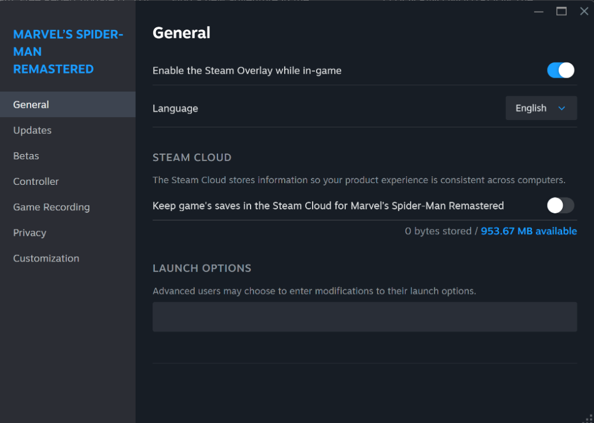
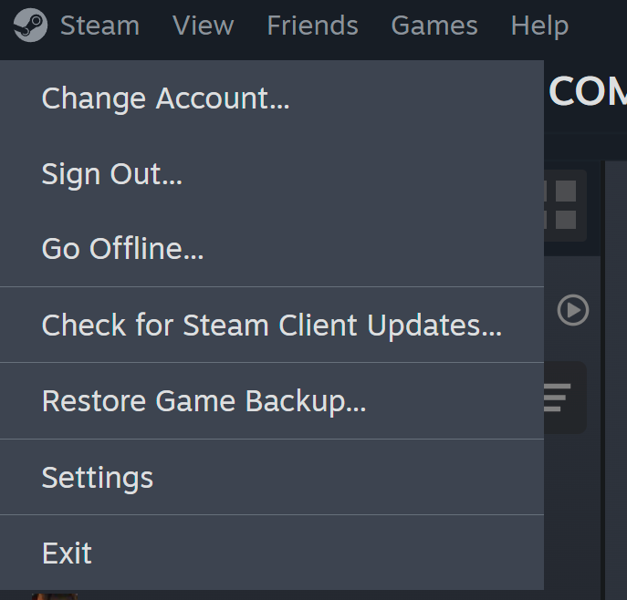

بروتوكول تفعيل الألعاب
اتبع الخطوات الثلاث بالترتيب لضمان تجربة لعب سلسة وآمنة
👤 1. إدخال بيانات الدخول

يرجى نسخ اسم المستخدم وكلمة المرور بدقة. استخدم خاصية نسخ/لصق فقط.
💡 تنبيه: تجنب إضافة أي مسافات إضافية أثناء النسخ لضمان نجاح الدخول.
⚠️ 2. إيقاف الحفظ السحابي (Disable Cloud Save)

كليك يمين على اللعبة > Properties > General. قم بإلغاء تحديد Uncheck Steam Cloud.
💡 هام جداً: هذه الخطوة تمنع تداخل ملفات الحفظ الخاصة بك مع المستخدمين الآخرين وتحمي
تقدمك في اللعبة.
📡 3. تفعيل وضع الأوفلاين (Activate Offline Mode)

اضغط على قائمة Steam ثم اختر Go Offline فوراً لبدء اللعب.
💡 استمتع باللعب بأمان وبدون أي انقطاع من مستخدمين آخرين.